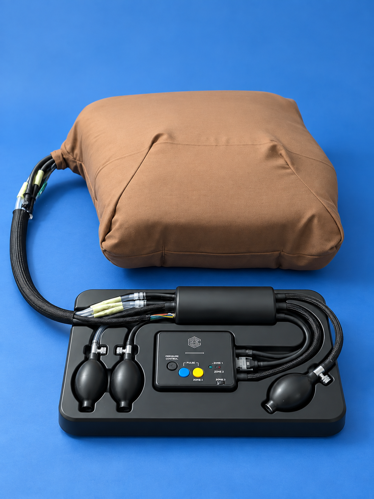

Calibration evidence stored
Readiness can be presented with the relevant state and calibration evidence before the instructor begins training.
A verified view of how ResQ turns physical chest compressions into live, understandable training feedback.
Each layer can be inspected and tested independently while participating in a single local training workflow.
Soft chest overlay, pneumatic bladder concept, pressure channels, Hall-effect displacement sensing, physical controls.
Pressure + magnetic sensingSensor acquisition, calibration, CPR metrics, persistent configuration, state transitions, telemetry, fault recovery.
ESP32-C3 · ESP-IDF · FreeRTOSStatus, heartbeat, telemetry, events, calibration evidence, and commands use the canonical resq/{deviceId}/... namespace.
Device registration, readiness, session lifecycle, telemetry processing, scoring, user access, streaming, and exports.
Java · Spring BootLocal device, calibration, user, session, score, and synchronization-queue records.
SQLiteWindows service orchestration plus responsive instructor and trainee experiences delivered through REST and SSE.
Tauri · Rust · React · TypeScriptQueued synchronization is isolated from live training so internet or cloud failure does not interrupt a local session.
Under Active DevelopmentReal-time data stays close to the training station; only optional synchronization crosses the local boundary.
State names below are taken from the production firmware. Error, interruption, reset, and shutdown paths are part of the implementation—not decorative diagram branches.
Normal operation progresses through configuration and connectivity into idle, calibration, readiness, and active-session states. Failure and recovery transitions depend on the triggering condition.
ResQ does not treat “connected” as automatically ready. The device and sensors must pass the supported calibration workflow before a scored session starts.
Readiness can be presented with the relevant state and calibration evidence before the instructor begins training.
Correct the physical setup or sensor condition, then retry. A failed readiness check does not silently continue into scoring.
Institution-specific target ranges remain configurable. The website does not claim universal clinical thresholds or certification.
Displacement estimates derived from calibrated sensor input.
Timing-derived cadence calculated throughout an active session.
Per-cycle detection of whether the chest returns sufficiently between compressions.
Interruptions and periods without valid compressions are tracked.
Pressure distribution supports coaching around left/right loading.
Completed sessions combine metric performance into reviewable results.
Historical documentation used two patterns. Production firmware uses resq/{deviceId}/...; the LocalHub retains compatibility parsing for older topics but does not make them canonical.
statusRetained device state and readiness information.
heartbeatConnectivity and health cadence for live device presence.
telemetryActive sensor and CPR metric samples.
eventsSession, calibration, and error events.
cmd/...Backend-to-firmware actions with request correlation.
debugDiagnostic information for controlled development workflows.

The instructor machine hosts every time-sensitive component: broker, backend, database, and dashboards. Internet or cloud failure cannot interrupt a local session.
Local sessions, scoring, history, and LAN dashboard access.
Optional long-term cloud synchronization and remote aggregation.
Follow the implementation, test evidence, releases, and remaining roadmap.